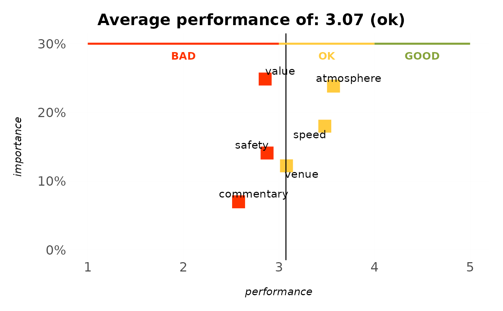

Programmatically adds the BAD / OK / GOOD style decision markers survey
charts carry: for each band a thin coloured marker line runs
along one axis, with a bold centred label. This turns the copy-pasted
geom_rect() + annotate("text", x = median(seq(from, to, .1)), ...) blocks
into one call, so any chart can be given consistent "where's good, where's
bad" guidance.
Usage
annotate_bands(
plot,
bands,
axis = c("x", "y"),
at = NULL,
label_offset = NULL,
labels = TRUE,
text_colour = NULL,
text_size = NULL,
linewidth = 1
)Arguments
- plot
A ggplot object.
- bands
A band specification: a data frame (or one of
bands_rating_3(),bands_rating_5(),bands_nps()) with columnsfrom,to,labeland optionallycolour.- axis
Which axis the bands run along:
"x"(default) or"y".- at
Position on the opposite axis at which to draw the marker line and labels (e.g. the top of a bar chart). If
NULL, inferred from the plot's panel range.- label_offset
Distance to nudge labels away from the marker line, in data units of the opposite axis. If
NULL(default), 4% of the opposite axis range, so labels sit clear of the line instead of on top of it.- labels
Whether to draw the band labels. Defaults to
TRUE.- text_colour, text_size
Label appearance.
text_colour = NULL(default) uses each band's own colour;text_size = NULL(default) matches the theme's base font size (11 pt) instead of a fixed geom size.- linewidth
Marker line width. Defaults to
1.
Details
Bands turn a chart into a decision aid: a thin coloured marker line runs along
one axis for each band, with a bold centred label, so a reader instantly sees
where "good" and "bad" lie. Supply a band spec (a data frame with from,
to, label and optional colour, or one of the bands_rating_3()
presets), the axis the bands run along, and at – the position on the
opposite axis for the marker line (usually the top of the panel; inferred from
the plot when omitted).
See also
mark_value() to add a single "you are here" marker.
Other decisions:
bands_rating_3(),
mark_value(),
rescale_bands()
Examples
# the performance axis of an IPM chart is the 1-5 rating scale the
# bands describe, so "where is good" lands where a reader expects it
ipm_model(podracing_survey, nps_value, "ratings_") %>%
plot_ipm() %>%
annotate_bands(bands_rating_3(), axis = "x")
#> Parsing `nps_value` as a non-binary variable.
#> Applying multiple regression to calculate relative weights...
#> Warning: Removed 1 row containing missing values or values outside the scale range
#> (`geom_text()`).
#> Warning: Removed 1 row containing missing values or values outside the scale range
#> (`geom_text()`).
#> Warning: Removed 1 row containing missing values or values outside the scale range
#> (`geom_text()`).
